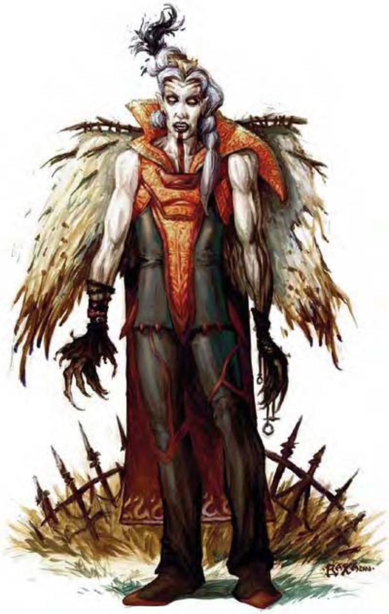
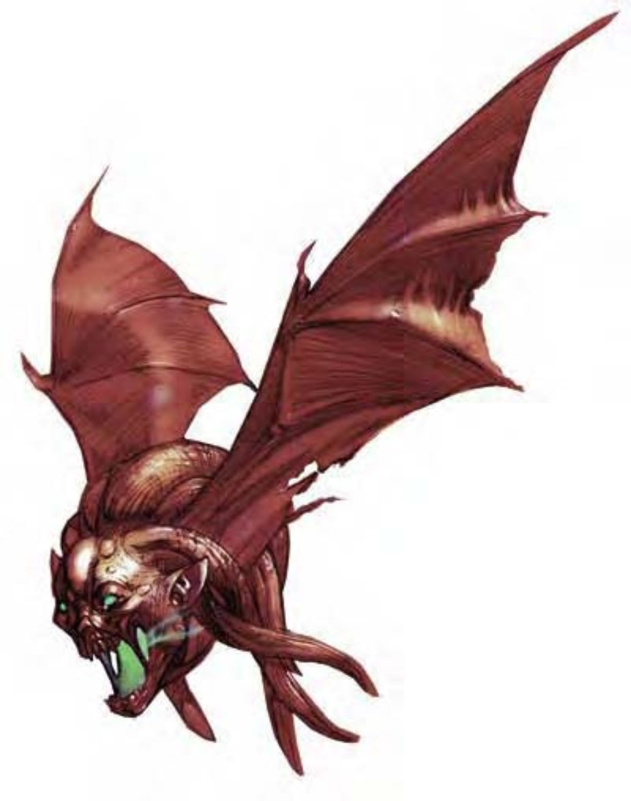

这只眼露凶光的生物看来就像邪恶的化身，虽然衣着华丽，但却破烂不堪，两根锋利的犬齿衬着血红色的嘴唇，看来更加怵目惊心。
一般人被吸血鬼杀害后就会成为不死生物，称为吸血衍体。与他们的创造者一样，吸血衍体也不能离开棺材或墓地太远。
生物成为吸血衍体之后，外貌和他们原本活着的时候没有太大差异，但五官会变得较为凶残而带有野性。
吸血衍体通晓通用语。
| 资料栏位 | 吸血衍体 (Vampire Spawn) 中型不死生物 |
| 生命骰 | 4d12+3 (29HP) |
| 先攻 | +6 |
| 速度 | 30英尺 (6格) |
| 防御等级 | 15 (+2敏捷、+3天生)、接触12、措手不及13 |
| 基本攻击/擒抱 | +2 / +5 |
| 攻击 | 挥击+5近战 (1d6+4附加吸能) |
| 全力攻击 | 挥击+5近战 (1d6+4附加吸能) |
| 占据/触及 | 5英尺 / 5英尺 |
| 特殊攻击 | 吸血、支配、吸能 |
| 特殊能力 | +2驱散抗力、伤害减免5/银、黑暗视觉60英尺、快速医疗2、气化形体、寒冷抗力10、电击抗力10、蛛行、不死特性 |
| 豁免 | 强韧+1、反射+5、意志+5 |
| 属性 | 力量16、敏捷14、体质―、智力13、感知13、魅力14 |
| 技能 | 哄骗+6、攀爬+8、手艺或专业 (任一) +4、交涉+4、躲藏+10、跳跃+8、聆听+11、潜行+10、搜索+8、察言观色+11、侦察+11 |
| 专长 | 警觉B、精通先攻B、快速反射B、专攻技能 (之前所选的手艺或专业技能)、健壮 |
| 环境 | 任何 |
| 组织 | 单独或一批 (2-5) |
| 宝藏 | 标准 |
| 阵营 | 总是邪恶（任何） |
| 进化 | ― |
| 等级修正值 | ― |
吸血衍体在战斗中主要仰赖超乎常人的力量，猛力挥击敌人，甚至将他们击飞到四周的岩石或墙壁上。他们也会善用气化形体的能力，飞到有利的位置再发动攻击。
吸血 (特异)：只要通过擒抱检定，吸血衍体的利齿能够咬穿活物的血管，藉此吸取血液。如果能够压制敌人，每轮都会自动吸血，吸取1d4点体质。每次吸血成功，吸血衍体本身会获得5点暂时生命值。
支配 (超自然)：只要目光相接，吸血衍体就能使敌人的意志力崩溃。此能力与凝视攻击类似，但吸血衍体必须花费一个标准动作主动注视敌人。光是看见吸血衍体并不会受害。遭到支配能力攻击的生物必须通过意志检定 (DC=14)，否则会听从吸血衍体的命令，效果与"支配人类"法术相同 (施法者等级5)。此能力范围可达30英尺。豁免检定DC的调整值与魅力调整值相同。
吸能 (超自然)：被吸血衍体的挥击击中的活物会得到1个负向等级。移除负向等级的强韧检定DC=14，豁免检定DC的调整值与魅力调整值相同。每造成1个负向等级，吸血衍体获得5点暂时生命值。
快速医疗 (特异)：只要目前生命值在1以上，吸血衍体每轮可以恢复2点伤害。若生命值降到0以下，吸血衍体会自动气化形体，设法逃离战斗。两小时之内若无法回到自己的棺材就会灰飞烟灭 (两小时可移动的距离约9英里)。回到棺材休息时，吸血衍体陷入无助状态。一小时后生命值恢复到1点并脱离无助状态，之后每轮可以恢复2点伤害。
气化形体 (超自然)：吸血衍体可以随意使用气化形体能力，属于标准动作，效果与同名法术相同 (施法者等级6)。但可以一直保持在气化状态，飞行速度20英尺，机动性灵活。
蛛行 (特异)：吸血衍体可以攀爬光滑的表面，效果与"蛛行术"相同。
技能：吸血衍体在进行"哄骗"、"躲藏"、"聆听"、"潜行"、"搜索"、"察言观色"和"侦察"检定时具有+4种族加值。
弱点和吸血鬼相同，所有能驱离或杀死吸血鬼的攻击方式或效果也对吸血衍体有效，详见关于吸血鬼的说明。

飞头蛮看来像是一个可怕的变形人头，两侧有一对皮膜翅膀。原本应该长头发的部分却生满扭曲的触须，双眼燃着绿色慑人的火焰。
这种恶心的生物来自永罚禁锢域最黑暗的深处，通常出没在墓园、废墟或其他充斥死亡与衰败的地方。
飞头蛮的体型比人类头颅略大，高约18英寸、翼展4英尺，重约10磅。
飞头蛮通晓炼狱语。
| 资料栏位 | 飞头蛮 (Vargouille) 小型异界生物（邪恶、外界） |
| 生命骰 | 1d8+1 (5HP) |
| 先攻 | +1 |
| 速度 | 飞行30英尺 (良好) (6格) |
| 防御等级 | 12 (+1体型、+1敏捷)、接触11、措手不及11 |
| 基本攻击/擒抱 | +1 / -3 |
| 攻击 | 啮咬+3近战 (1d4附加毒素) |
| 全力攻击 | 啮咬+3近战 (1d4附加毒素) |
| 占据/触及 | 5英尺 / 5英尺 |
| 特殊攻击 | 尖叫、亲吻、毒素 |
| 特殊能力 | 黑暗视觉60英尺 |
| 豁免 | 强韧+3、反射+3、意志+3 |
| 属性 | 力量10、敏捷13、体质12、智力5、感知12、魅力8 |
| 技能 | 躲藏+11、威吓+3、聆听+5、潜行+7、侦察+5 |
| 专长 | 隐匿、武器娴熟B |
| 环境 | 永罚禁锢域 |
| 组织 | 聚集 (2-5) 或聚众 (6-11) |
| 宝藏 | 无 |
| 阵营 | 总是中立邪恶 |
| 进化 | 2-3HD (小型) |
| 等级修正值 | ― |
虽然飞头蛮可以用锯齿状的利牙啮咬敌人，但真正让人胆战心惊的却是他们的特殊攻击。对抗伤害减免能力时，飞头蛮的天生武器和持用的任何武器都视为邪恶阵营。
尖叫 (超自然)：除了咬人之外，飞头蛮的血盆大口还会发出刺耳的尖叫。此时，60英尺内所有听见尖叫并能看见飞头蛮的生物 (其他飞头蛮除外) 都必须通过强韧检定 (DC=12)，否则会因恐惧而陷入麻痹2d4轮。若飞头蛮攻击受害者、离开有效范围或是离开视线范围，麻痹效果也会终止。陷入麻痹的生物可能会遭到飞头蛮的亲吻攻击 (详如下述)。通过强韧检定的生物24小时内不会再受到同一个飞头蛮的尖叫影响。尖叫属于影响心灵的恐惧效果，豁免检定DC的调整值与体质调整值相同，包含+1种族加值。
亲吻 (超自然)：飞头蛮可以亲吻陷入麻痹的生物，此动作视为近战接触攻击，一旦命中，受害者必须通过强韧检定 (DC=15)，否则就会开始一连串痛苦的变形过程，最多24小时内就会变成飞头蛮 (时间通常都快得多，四个变形阶段所需的时间都是1d6小时)。一开始，在最初1d6小时内，受害者所有的头发都会脱落。接下来1d6小时内，耳朵会长大变成一对皮膜翅膀，下巴和头皮开始生出触须，牙齿长得又尖又长。再来1d6小时内，受害者每小时都会被吸取1点智力和魅力 (属性值不会低于3点)。在经历最终的1d6小时后，整个变形过程结束，头颅脱离躯体 (也就是死亡) 并成为新的飞头蛮。
照射日光可以暂时中止变形过程，即使"昼明术"也可以延缓死亡的时间。但只有"移除诅咒"法术才能完全逆转变形过程。
豁免检定DC的调整值与体质调整值相同，包含+4种族加值。
毒素 (特异)：每次造成伤害后，飞头蛮就会注入毒素。受害者必须通过强韧检定 (DC=12)，否则无法治疗飞头蛮的啮咬伤害，即使魔法也不行。"中和毒性"或"医疗术"可以移除飞头蛮的毒素，而施展"减缓毒性"则会让伤口可以用魔法治疗。豁免检定DC的调整值与体质调整值相同，包含+1种族加值。